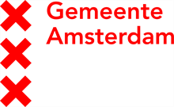
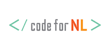

NL Maps
Samenwerken in kaartviewers
Edward Mac Gillavry, Webmapper
Almere, 11 jul 2018
Introductie
- Edward Mac Gillavry
- Product-owner NL Maps
- Webmapper
- HAS Den Bosch, Geo Academie
- Webmapper
- Wij maken interactieve kaarten en datavisualisaties.
- Onze expertise is open {source; data; standaarden}.
- Onze kracht is het combineren van cartografie, webtechnologie en geo.
- Edward, Hans, Niene en Steven
Doelstelling
- Stand van zaken NL Maps
- Kaartviewers bij overheden
- Lessen
- Conclusie
NL Maps
- Kadaster
- BRT-Achtergrondkaart
- OpenLayers/Leaflet/GMaps/Mapbox
- Wizard + bibliotheek
- Web-ontwikkelaars
Configuratie
- Achtergrondlagen (XYZ)
- Thema-lagen (WMS)
- Standaard-kaartbeeld (bbox, center, zoom)
- Zoekgebied van de geocoder
- UI styling
Nieuwe functionaliteit
- Feature query (kaartprikker)
- Selecteer GeoJSON features op de kaart


Kaartviewers bij overheden
Met één klik op de kaart weet de gebruiker welke regels er binnen een bepaald gebied van kracht zijn en kan daar ook gegevens over de fysieke omgevingskwaliteit raadplegen.
— Visie-document DSO
— Google Maps API ~1400%+
— Wet Markt en Overheid?
Gebruik geo-viewers op overheidswebsites
- Webrichtlijnen
- Privacy
- GeoZeT én Google Maps
— Geon (2011)
Viewers
Wat missen we hier nog?
Flamingo GeoCMS
- Flamingo Gebruikerscommunity
- OpenLayers 3 (PR voor OL 4)
- ExtJS
- Java-backend (GeoTools, Solr)
- Admin-module
GeoZeT
- KOOP
- OpenLayers 2.13
- ExtJS
- Java-backend
- Lijst-view
- Bekendmakingen
- Webrichtlijnen
Heron MC
- PDOK Viewer, Warwickshire, …
- OpenLayers 2.13
- ExtJS
PDOK Kaart
- Kadaster, RWS
- OpenLayers 2.13
- Wizard (jQuery) en API
Lessen
Hou het klein
- Functionaliteit
- Modulaire opbouw
Community
- Gooi het niet over de schutting
- Jij bent onderdeel van de community
- Blijf de community betrekken
- Slack, GitHub
Afwegingen
- Doel: Exploration (WebGIS) v. Explanation (Kaart)
- Doelgroep: intern of extern
- Techniek/frameworks: React, Vue, Angular
- Organisatie, beheer, community
Conclusies
Conclusies
Doe mee
- NLMaps: https://nlmaps.nl
- GitHub: https://github.com/kadaster/nlmaps
- Slack: https://praatmee.codefor.nl